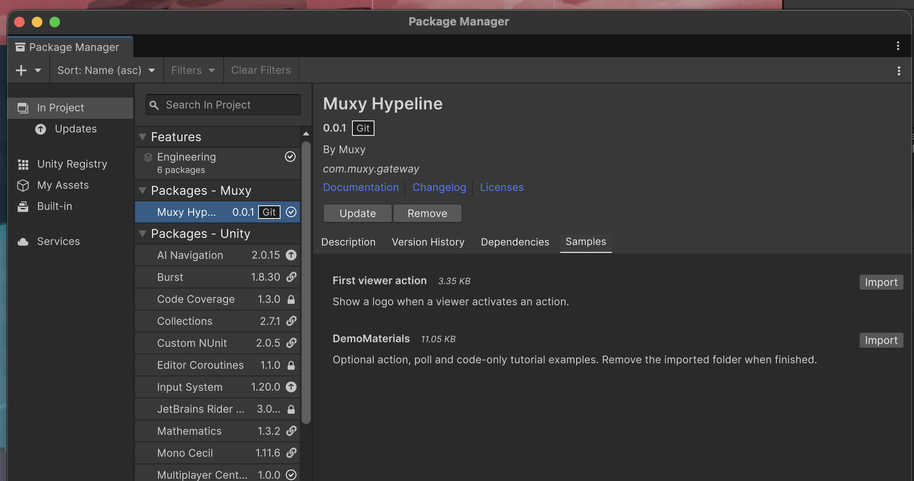
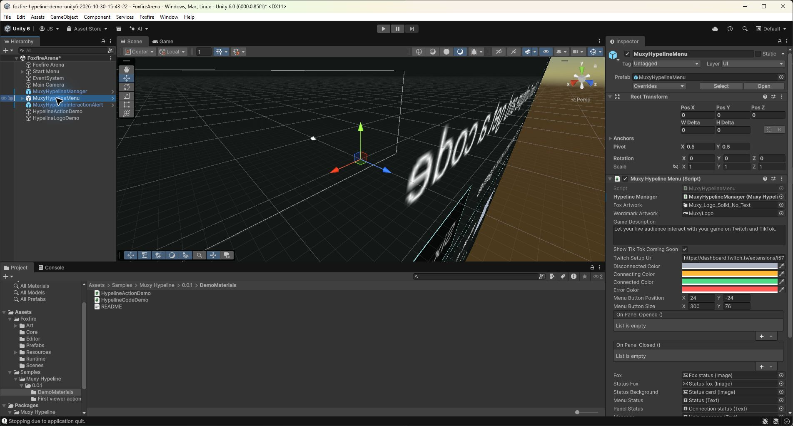
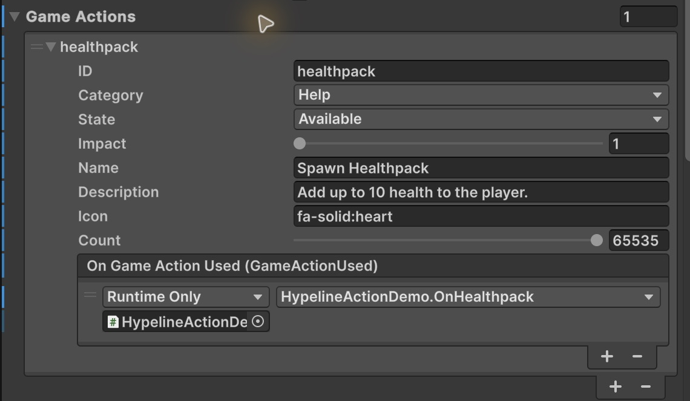
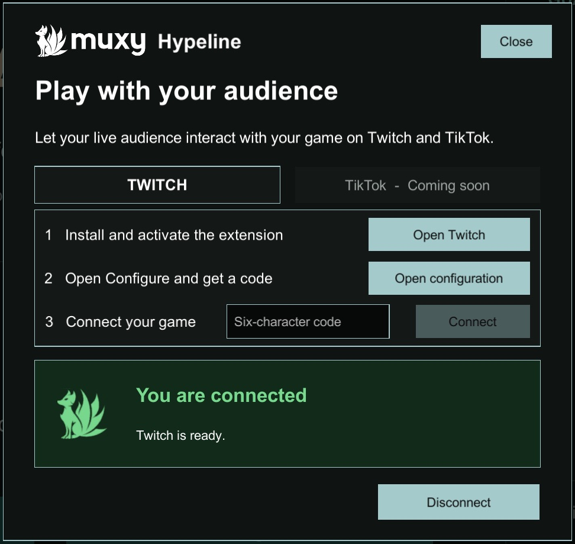
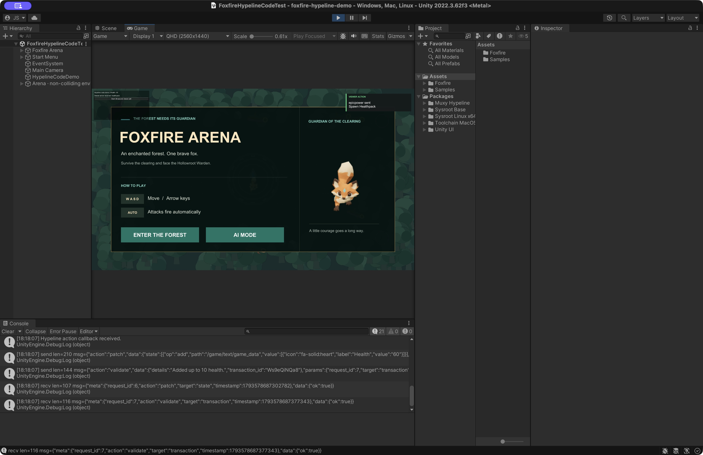

Get started with Muxy Hypeline in Unity
Connect your Unity game to the Muxy Gateway Twitch extension and receive your first viewer action. In this walkthrough, a viewer selects Spawn Healthpack, the sample's health increases from 50 to 60, an in-game alert identifies the viewer and action, and the updated value appears in the extension. The alert is a required part of this walkthrough.
Review draft: This proposes a new order for the developer guide. The install URL currently points to a development branch, and this draft has not yet been validated end to end in a fresh project or standalone player.
Choose the starter project for your Unity version, clone it, and open it in Unity Hub. Then install and configure Hypeline by following this guide.
Foxfire Arena for Unity 2022.3.62f3 ↗
Foxfire Arena for Unity 6 (6000.0.85f1) ↗
Before you start
You need:
- A Unity project using Unity 2020.3 or newer and a desktop target. Test your own target, architecture, and scripting backend before release; package import alone does not establish platform support.
- Git installed and available to Unity for installation from a Git URL. Alternatively, obtain a local checkout of the SDK and select its
package.jsonin Package Manager; keep that folder in place. - A Twitch broadcaster account that can install and activate the Muxy Gateway extension on its channel.
- A separate viewer account or browser session to test the audience experience.
This guide uses the testing Game ID gamelink-testing. Before connecting, confirm that this exact ID is listed under Linked Games in the broadcaster's extension configuration. For your own game, use its assigned ID and ensure it matches the extension configuration.
Install the SDK
- Open your project in Unity. Open Window → Package Manager (or Window → Package Management → Package Manager in newer Editors).
- Open the + or Add menu and select Add package from git URL.
- Enter
https://github.com/jrslyce/gateway-unity.git#codex/hypeline-developer-readinessand add the package. This is a development branch, not a fixed release; record the resolved commit for reproducible testing. A release version or pinned commit should replace it before this guide ships. - Wait for package resolution and compilation, then check the Console for errors.
- In Package Manager, select Muxy Hypeline, open Samples, and import DemoMaterials. It contains the tutorial action and code-only examples. The required in-game alert prefab is included in the SDK under Prefabs.

Checkpoint: In the Project window, find Packages → Muxy Hypeline → Prefabs and Assets/Samples/Muxy Hypeline/0.0.1/DemoMaterials. The sample folder reflects package version 0.0.1. Resolve compilation errors before continuing. If your own scripts use an assembly definition, add a reference to Muxy.Hypeline; SDK types use using MuxyHypeline;.
Set up your scene
Make these changes outside Play mode and save the scene.
- Drag MuxyHypelineManager from Packages → Muxy Hypeline → Prefabs into the Hierarchy. If the scene already has a manager, reuse it; keep only one active. The imported demo scripts are in
Assets/Samples/Muxy Hypeline/0.0.1/DemoMaterials; the manager prefab is in the package's Prefabs folder. - Select the scene's manager. Set Game ID to
gamelink-testing. Under Game Metadata, enter the game name viewers should see. Leave Theme blank for the default. - Drag MuxyHypelineMenu into the scene. Assign the scene manager to its Hypeline Manager field. Adjust its button position and size to fit your game menu.

- Add the required in-game alert. Drag MuxyHypelineInteractionAlert from Packages → Muxy Hypeline → Prefabs into the scene and assign the same scene manager to its Hypeline Manager field. Keep the alert GameObject active and position it where it remains readable over your game and broadcast HUD. Its local Test Alert preview checks appearance and sound; it does not send or fulfill a viewer action. The visible alert is required; sound is optional and requires an active Audio Listener and unmuted audio.
- Ensure the scene has one active EventSystem, with an input module compatible with the project's input settings. For a new-Input-System-only project, use Input System UI Input Module. The Hypeline menu does not create an EventSystem.
- On the manager, add a Game Texts element with Label =
Health, Value =50, and Icon =fa-solid:heart. - Create an empty GameObject named
HypelineActionDemo. Add the imported Hypeline Action Demo component and assign the scene manager to its Hypeline Manager field. - The demo's debug buttons use legacy IMGUI input. If the project uses only the new Input System, set Player → Other Settings → Active Input Handling to Both and restart Unity if prompted. This is needed for the demo controls, not the Hypeline panel.
Checkpoint: One active manager and EventSystem are present; the menu, required interaction alert, and demo all reference that manager. The alert is enabled and visible within the game view. Edit the scene instances, not the read-only package prefab assets.
Configure the healthpack action
On the scene manager, add a Game Action with these values:
| Field | Value |
|---|---|
| ID | healthpack |
| Name | Spawn Healthpack |
| Description | Add up to 10 health to the player. |
| Category | Help |
| State | Available |
| Impact | 1 |
| Icon | fa-solid:heart |
| Count | 65535 (infinite count) |
In the action's On Game Action Used UnityEvent, select +, drag in the HypelineActionDemo GameObject, and choose HypelineActionDemo → OnHealthpack under Dynamic GameActionUsed. Use the dynamic event so the received transaction reaches the handler. The alert listens to the same manager's received-action event automatically; keep its manager reference assigned and avoid adding a second health or fulfillment handler. Save the scene.

Checkpoint: The action ID is exactly healthpack, and its dynamic callback points to the demo component. The sample changes its own counter; it does not change your game's health automatically.
Test the sample locally
- Enter Play mode. Close the Hypeline connection panel if it is open so that the sample controls are visible.
- Confirm the sample shows Health: 50. Select Local test: add 10 health and confirm it changes to 60.
- Select the scene's MuxyHypelineInteractionAlert in the Hierarchy. In its Inspector, set the Test Alert viewer and action, then select Test Alert. Confirm the in-game card shows the viewer name and Spawn Healthpack, remains readable, and clears after about six seconds. This is a local presentation preview.
- Stop and restart Play mode to reset the sample to 50 and clear previews before the live test.
The local health button checks game logic; Test Alert checks presentation. Both checks are required before connecting, and neither proves Twitch delivery or transaction fulfillment. The local health button does not trigger a viewer-action alert.
Connect your Twitch channel
- In the broadcaster's Twitch Creator Dashboard, install and activate the Muxy Gateway extension in a supported slot.
- Open the extension's Configure view. Confirm that Linked Games contains the exact Game ID configured on the manager.
- Select Get New Code. Codes expire after five minutes.
- In Play mode, open Stream Interactivity, enter the six-character code, and select Connect.
- Wait for You are connected and the green fox. If the code expires, request a fresh one. Do not share codes or tokens.

Checkpoint: The channel is connected. Close the connection panel so the game and alert area can be seen. Authentication alone does not yet prove viewer delivery, fulfillment, or an in-game alert.
Test the complete round trip
- With the game connected and the sample at Health 50, open the broadcaster's channel in a separate viewer session under the conditions required for the extension's placement.
- Confirm the game name, Health text, and Spawn Healthpack action are visible. Select the action using the extension's available interaction flow. Review any purchase confirmation and cost before proceeding.
- Watch the running game immediately after the viewer takes the action. Confirm an in-game alert shows that viewer's name and Spawn Healthpack. If broadcasting, confirm the alert also appears in the delayed Twitch video. The alert clears after about six seconds.
- Confirm Unity shows Health: 60, the demo reports
Viewer action received: healthpack., and the extension's Health value updates to 60. Check the received action and successful transaction acknowledgment.
Required checkpoint: A real viewer action produces the in-game alert, changes sample health exactly once, receives a successful fulfillment acknowledgment, and updates the extension. Health changing without a visible in-game alert does not complete step 6.

The sample accepts the received healthpack transaction after updating its own counter. A visible alert alone does not apply the effect or acknowledge a transaction. A local button press does not prove viewer delivery.
Adapt the sample for your game
Replace the sample handler with your own gameplay logic. Accept a transaction only after the effect succeeds, and provide a refund path when it cannot be fulfilled. Avoid attaching two fulfillment handlers to the same action. Design duplicate handling and recovery for your integration; the tutorial sample is not a complete production transaction system.
Keep the in-game viewer alert when adapting the sample. In the prefab path, retain MuxyHypelineInteractionAlert and its reference to the active manager in every scene that accepts viewer actions. In the C# path, retain or replace the sample's DrawViewerActionAlert() presentation and call it from your received-action flow. Preserve the viewer name, action name, readable placement, and timed dismissal. An alert presents the event; your gameplay handler still owns the effect and transaction acknowledgment.
Make actions unavailable when the game cannot fulfill them, such as during loading or pause. Test a fresh PIN, an invalid PIN, saved-session reconnect, disconnect/reconnect, and scene reload. Build and test authentication, a real action, its in-game alert, and transaction acknowledgment in a standalone player for each platform, architecture, backend, and stripping configuration you intend to support. Repeat the alert check after scene changes.
When you finish testing, remove the demo components and their UnityEvent bindings from scenes before deleting the imported DemoMaterials folder. Keep your adapted gameplay and alert presentation. Do not remove the working in-game alert when cleaning up the tutorial; the SDK package and its prefabs are separate.
Install with an AI agent
Give your coding agent this Markdown prompt along with your Unity project. It follows steps 1–7, checks existing setup before making changes, and treats the visible in-game viewer-action alert as a required checkpoint.
Open your project in the agent’s workspace, copy the prompt below, and paste it into your agent chat. You can also download the .md file and attach it. Supply your project path or Twitch channel if the agent cannot determine them from your current session.
The agent must verify the real viewer action, in-game alert, transaction acknowledgment, and extension update. Local previews and unverified steps must be reported clearly. You may need to complete a Twitch or Unity interaction when the agent cannot access it.
Read the complete install prompt Markdown
# Install Muxy Hypeline in my Unity project
Use the open Unity project, or the project path I provide, and carry out the
Muxy Hypeline Getting Started guide:
https://muxy.github.io/gateway-unity/
Read the current guide before making changes. Follow its steps 1–7 and use its
current package URL, examples, field names, and troubleshooting advice. The
visible in-game viewer-action alert is a required part of the integration.
## Project and working method
- Inspect the project's instructions, Unity version, active scene, input system,
package manifest/lock, existing Hypeline components, and Git changes first.
Use the project's matching Unity Editor. Preserve unrelated work, scene
content, and existing .meta GUIDs. Do not assume Foxfire includes the SDK.
- Use the open project by default. If I need a starter, use the guide's Foxfire
Arena repository matching my Unity version; do not replace an existing game.
- Reuse working configuration. Keep one active SDK owner and one compatible
EventSystem. Do not overwrite a patched or different SDK version without
first explaining the compatibility issue and necessary change.
- Follow the prefab walkthrough by default. If I request the C# alternative,
use the guide's complete HypelineCodeDemo.cs in a separate test scene without
the prefab manager/menu/alert. Keep its built-in viewer-action alert. Do not
combine both paths or register duplicate fulfillment handlers.
- Use available Unity, filesystem, and browser tools. Make persistent scene
changes outside Play mode and save them. If a UI operation needs a file-based
equivalent, explain it and verify Unity imports the result. If a step needs
human interaction or missing access, finish independent work and ask for the
specific action needed. Do not invent a successful result.
## Complete the seven steps
1. **Install.** Install the SDK from the current guide's Git URL and import
DemoMaterials. Resolve package and script errors before continuing. Record
the package URL and resolved commit; a moving development branch is not a
fixed release. Add the Muxy.Hypeline assembly reference if my assembly needs
it. Inspect the actual installed package rather than assuming types exist.
2. **Set up the scene.** Reuse or add MuxyHypelineManager. For the tutorial use
Game ID `gamelink-testing` only if it matches Linked Games in the broadcaster's
extension configuration; otherwise use my assigned, matching Game ID. Set
the game name and leave Theme blank for the default. Add MuxyHypelineMenu and
the required MuxyHypelineInteractionAlert, both referencing that manager.
Keep the alert active and readable over the game and broadcast HUD. Ensure
one EventSystem with a compatible input module. Add Game Text Health = 50,
icon `fa-solid:heart`, and the imported HypelineActionDemo with the same
manager reference. Follow the guide's Active Input Handling advice for the
sample's IMGUI controls, including any required Editor restart.
3. **Configure the action.** Add ID `healthpack`, name `Spawn Healthpack`,
description `Add up to 10 health to the player.`, category `Help`, state
`Available`, impact 1, icon `fa-solid:heart`, and count 65535. Bind the dynamic
GameActionUsed callback to HypelineActionDemo.OnHealthpack exactly once.
The alert listens to the same manager; it must not become another health
or fulfillment handler. Save the scene.
4. **Test locally.** In Play mode, check the sample's local health button changes
50 to 60. Separately run the alert's Test Alert preview: the viewer name and
Spawn Healthpack must be visible, readable, and clear after about six seconds.
Sound is optional. Label both checks as local previews, not Twitch delivery.
The local health button does not emit a viewer-action alert. Restart Play
mode to reset to 50 before the live test. For the C# alternative, exercise its
local controls and inspect its required alert drawing/received-action path;
still verify the alert with a real action in step 6.
5. **Connect Twitch.** Use the broadcaster channel/configuration I specify.
Confirm the extension is installed, active, and linked to the same Game ID.
Use a fresh six-character PIN from that configuration; it expires after five
minutes. If I authorize use of the open configuration tab, request another
code there when needed. Enter it in the game's Stream Interactivity panel,
connect, and verify the connected status. Keep PINs and tokens out of source,
commits, screenshots, and reports. Close the panel for the action test.
Authentication alone does not prove action delivery.
6. **Verify a real round trip, including the alert.** Open the correct channel
in a viewer session and confirm the game, Health 50, and Spawn Healthpack are
visible. Use a zero-cost action when available; review the displayed cost and
obtain authorization before spending. Take one real viewer action, or ask me
to click it if browser access cannot do so. Watch the Unity game immediately
and capture the timed in-game alert showing the viewer and action. Confirm
sample health changes exactly once from 50 to 60, the received healthpack
event is observed, the transaction gets a successful fulfillment
acknowledgment, and the extension updates Health to 60. If broadcasting,
also check the alert in the delayed Twitch video and account for stream
latency. A changed Game Info value, a status line, an alert preview, or a
submitted request alone does not complete this step. Health changing without
a visible in-game viewer-action alert is a failed checkpoint. If any evidence
cannot be obtained, mark that part unverified and explain the next check.
7. **Adapt for my game.** Explain that the sample updates its own health counter;
it does not automatically heal the Foxfire player or spawn a physical pickup.
If my requested gameplay effect is clear, connect the handler to that effect.
Otherwise keep the verified demo and ask which real gameplay effect I want.
Accept only after the effect succeeds; provide a refund path on failure and
appropriate duplicate handling/recovery. Keep one fulfillment owner, gate
unavailable actions during loading/pause, and preserve the working viewer
alert through scene changes and demo cleanup. Test fresh/invalid PINs, saved
session reconnect, disconnect/reconnect, and scene reload as applicable. Build
and repeat authentication, a real action, the visible alert, and acknowledgment
for each intended standalone platform/backend/stripping configuration when
available. Report Editor and standalone results separately; do not infer
player support from package import or Editor success.
## Deliver the result
Report the scene and files changed, integration path, Unity version, package
revision, and any deviations from the guide. Give a concise result for each
step: **passed**, **failed**, or **unverified**, with the evidence supporting it.
Distinguish local previews, real Twitch delivery, visible in-game alert,
transaction acknowledgment, extension state, broadcast video, actual gameplay,
and standalone testing. Include useful screenshots or log locations with secrets
removed. Identify the specific remaining action for anything incomplete.
Keep working through the authorized setup and checks. Do not declare the full
integration complete until the required live alert and other applicable
checkpoints have been verified.Troubleshooting
- Package does not install: Confirm Git is installed and accessible to Unity, check the URL and network access, and read the first Package Manager or Console error. For a disk install, select the checkout's
package.jsonand keep the checkout in place. - SDK types are missing: Resolve package compilation errors first. If your script uses a custom assembly definition, reference
Muxy.Hypeline. - Cannot type the PIN: Check for exactly one active EventSystem and an input module compatible with the project's active input system.
- Authentication fails: Request a fresh code and check that the extension is active and the manager's Game ID matches Linked Games. Review the
Hypeline:Console status messages; keep PINs and tokens out of reports. - Connected but no action appears: Confirm the extension is active on the correct channel, the viewer can see its placement, and the action is registered, available, and has a usable count.
- Action appears but does nothing: Check the
healthpackID and the dynamicHypelineActionDemo.OnHealthpackbinding. Check the Console for handler errors. - Health changes but no in-game alert appears: In the prefab path, check that
MuxyHypelineInteractionAlertis active, references the same manager, and sits within the visible game view. Run its local Test Alert, then repeat a real viewer action. In the C# path, use the currentHypelineCodeDemo.cswithDrawViewerActionAlert()and retain that code when adapting the sample. The persistent status line and Twitch Game Info value do not replace the timed in-game alert. - Editor works but the player fails: Check the first player-log error, native plugin import settings, architecture, scripting backend, and stripping configuration. Test the actual player you plan to ship.
Optional: explore other examples
- First viewer action: Import this separate Package Manager sample to show a scene object for an action. Use its own action ID and avoid adding a second fulfillment handler to the same transaction.
- Code-only integration: Use
HypelineCodeDemo.csin a separate test scene without the prefab manager or menu. It includes its own required six-second in-game viewer-action alert. - Polling: Use the demo's poll controls after authentication, then test with an actual viewer vote and define behavior for no votes, ties, and timeouts.
View the Hypeline action sample script C#
using MuxyHypeline;
using UnityEngine;
// Tutorial scene only: use the prefab manager as the sole SDK owner.
public class HypelineActionDemo : MonoBehaviour
{
public MuxyHypelineManager HypelineManager;
private MuxyHypelineMenu menu;
private int health = 50;
private string status = "Open Stream Interactivity and connect with your Twitch code.";
private void OnEnable()
{
if (HypelineManager == null)
{
Debug.LogError("Assign Hypeline Manager before enabling the demo.");
enabled = false;
return;
}
HypelineManager.OnAuthentication.AddListener(OnAuthentication);
}
private void OnDisable()
{
if (HypelineManager != null)
HypelineManager.OnAuthentication.RemoveListener(OnAuthentication);
}
private void OnAuthentication(AuthenticationResponse response)
{
status = response.HasError ? "Authentication failed. Request a fresh PIN."
: "Authenticated. Try Spawn Healthpack in the extension.";
if (!response.HasError) PublishHealth();
}
// Wire the action's Dynamic GameActionUsed event to this public method.
public void OnHealthpack(GameActionUsed used)
{
if (used.ActionID != "healthpack") return;
ApplyHealth();
HypelineManager.AcceptGameAction(used, "Added up to 10 health.");
status = "Viewer action received: healthpack.";
Debug.Log("Hypeline viewer action received: healthpack.");
}
private void ApplyHealth()
{
health = Mathf.Min(100, health + 10);
if (HypelineManager.IsAuthenticated()) PublishHealth();
}
private void PublishHealth()
{
// The guide creates Health as Game Texts element 0.
GameText text = HypelineManager.GetGameTextAt(0);
text.Value = health.ToString();
HypelineManager.SetGameTextAt(text, 0);
}
public void StartDemoPoll()
{
if (!HypelineManager.IsAuthenticated()) return;
PollConfiguration config = new PollConfiguration
{
Prompt = "Where should we go next?",
Mode = PollMode.Order,
DurationInSeconds = 30
};
config.Options.Add("Forest");
config.Options.Add("Desert");
config.Options.Add("Ice Cave");
config.OnPollUpdate = update =>
{
// The manager does not forward this delegate automatically.
HypelineManager.OnPollUpdate.Invoke(update);
if (!update.IsFinal) return;
status = update.Count > 0 && update.Winner >= 0 &&
update.Winner < config.Options.Count
? "Poll winner: " + config.Options[update.Winner]
: "Poll ended without a usable winner.";
Debug.Log(status);
};
HypelineManager.SetPollConfiguration(config);
HypelineManager.StartPoll();
}
private bool ShouldShowControls()
{
if (menu == null) menu = FindObjectOfType<MuxyHypelineMenu>();
return menu == null || !menu.IsPanelOpen;
}
private void OnGUI()
{
if (!ShouldShowControls()) return;
GUILayout.BeginArea(new Rect(16, Screen.height - 206, 440, 190), GUI.skin.box);
GUILayout.Label("Hypeline action test | Health: " + health);
GUILayout.Label(status);
if (GUILayout.Button("Local test: add 10 health")) ApplyHealth();
GUI.enabled = HypelineManager != null && HypelineManager.IsAuthenticated();
if (GUILayout.Button("Start 30-second viewer poll")) StartDemoPoll();
GUI.enabled = true;
GUILayout.EndArea();
}
}Release notes for this draft
The SDK's refresh token is stored in Unity PlayerPrefs by the manager and is not encrypted. Review credential storage for your product. The native transport does not add WebGL, mobile, or console support. TikTok is currently a coming-soon label.
This draft should be verified against the exact SDK revision selected for release. A fresh installation, live viewer action, and standalone player test are required before presenting the walkthrough as verified.
Keep viewers up to date
Game Texts are labeled values in the extension. Use them for the current level, player health, difficulty, or loadout. The sample sends its own Health value after authentication and whenever the sample counter changes.
// Update the Health entry created at index 0 in the manager.
GameText healthText = HypelineManager.GetGameTextAt(0);
healthText.Value = "60";
HypelineManager.SetGameTextAt(healthText, 0);
// Add an entry, then submit the whole list.
HypelineManager.AddGameText(new GameText
{
Label = "Level", Value = "Forest", Icon = "fa-solid:dungeon"
});
HypelineManager.SubmitGameTexts();Browse Game Text and action icon names
Search the 2,977 icons included in the Hypeline extension. Copy a name into a Game Text or action's Icon field. Game Info icons require an extension build with icon support. Updating the Unity package alone does not update an extension already hosted on Twitch.
Open this section to load the icon library.
| Icon | Name to enter | Copy |
|---|
AddGameText() and ClearGameTexts() change the manager's local list; call SubmitGameTexts() to publish it, including an empty list to clear Game Info. The code-only SDK uses SetGameTexts(GameText[]) to publish the complete list. Send meaningful state changes instead of resending identical data every frame.
Enable actions only when they can run
// Prefab manager: call when pausing / resuming valid gameplay.
HypelineManager.SetAllGameActionStates(GameActionState.Unavailable);
HypelineManager.SetAllGameActionStates(GameActionState.Available);
// After editing a manager action, explicitly submit the list.
GameAction action = HypelineManager.GetGameActionAt(0);
action.State = GameActionState.Hidden;
HypelineManager.SetGameActionAt(action, 0);
HypelineManager.SubmitGameActions();After removing actions, call SubmitGameActions() to publish the updated list. Submitting an empty list sends a request to clear the available actions.
Use Unavailable for a visible action viewers cannot currently use and Hidden when it should not appear. Keep IDs unique. Choose finite counts for disruptive mechanics and restore availability only after the next scene or match is ready.
Add a game logo
Import a readable texture in a supported format: RGB24, RGBA32, or ARGB32. Enable Read/Write and choose a compatible texture format in its import settings. Use the SDK's static conversion helper:
GameMetadata metadata = HypelineManager.GetGameMetadata();
metadata.Logo = SDK.ConvertTextureToBase64(yourReadableTexture);
HypelineManager.SetGameMetadata(metadata);Here yourReadableTexture is your own assigned Texture2D. Retain the existing metadata when changing the logo. To use a code-supplied Logo, leave the manager’s Game Logo texture unassigned; the texture overrides it when assigned.
Let viewers choose what happens next
The demo's Start 30-second viewer poll button publishes a poll with Forest, Desert, and Ice Cave options. It uses PollMode.Order for one vote per viewer; PollMode.Chaos allows repeated voting. A duration of 0 is infinite, so use a positive duration for this test.
- While authenticated, select the demo's poll button once.
- In the viewer extension, select a poll option and submit a vote.
- After 30 seconds, verify the demo reports the winning option. With zero votes, it reports no usable winner.
- Apply a gameplay decision only on a final update, and validate the result before indexing an options list. Decide how your game should handle ties and no votes; the demo uses the reported winner when valid.
Optional: show the bundled polling UI
Outside Play mode, add MuxyHypelinePolling.prefab and assign its Hypeline Manager. Adjust its position and winner display duration in the Inspector.
To preview without connecting, enter Play mode, select the polling instance in the Hierarchy, and click Start Test Poll. A favorite-color poll appears and receives simulated votes automatically. Use Add Sample Vote or Finish Test Poll to control it. This preview stays local and does not start a live poll or send votes.
For a live poll, the demo's callback contains this bridge:
config.OnPollUpdate = update =>
{
HypelineManager.OnPollUpdate.Invoke(update);
if (!update.IsFinal) return;
// Validate vote count and winner before applying game logic.
};MuxyHypelineManager.StartPoll() passes its configuration to the SDK; it does not automatically forward PollConfiguration.OnPollUpdate into the manager's UnityEvent. The widget listens to that UnityEvent, so the bridge is required.
The widget shows vote counts, percentages, and the final winner when the callback provides one. The live display does not show a countdown; use the final callback to decide when the poll has ended.
Integrate directly with C#
Use this path for custom authentication and game UI. Create a separate scene without MuxyHypelineManager or its UI prefabs. Import the DemoMaterials sample from the Muxy Hypeline package in Package Manager, attach its HypelineCodeDemo.cs to one active GameObject, and enter Play mode. If you previously downloaded this script, keep only one copy of the class. The demo draws a minimal PIN field, status panel, and required six-second viewer-action alert using Unity IMGUI. Its healthpack handler shows the viewer name and action after applying the effect and accepting the transaction. No additional manager or alert prefab is needed for this alternative. Complete the same visible-alert checkpoint in step 6 and preserve the alert when adapting the code in step 7. If the project uses only the new Input System, set Player → Other Settings → Active Input Handling to Both and restart the Editor if prompted.
| Lifecycle step | Your code owns |
|---|---|
| Initialize | Create new SDK(gameID) once per active owner. |
| Connect | Call RunInProduction(). Authentication is a separate step. |
| Process events | Call sdk.Update() every frame on the Unity main thread. |
| Authenticate | Call AuthenticateWithPIN and check response.HasError. |
| Publish | After success, register callbacks and send metadata, actions, and texts. |
| Shut down | Call StopWebsocketTransport() when the owner is disabled. |
View the complete code integration C#
using MuxyHypeline;
using UnityEngine;
// Alternative to the prefab manager. Do not run both integrations together.
public class HypelineCodeDemo : MonoBehaviour
{
[SerializeField] private string gameID = "gamelink-testing";
private SDK sdk;
private string pin = "";
private string status = "Request a code from the Twitch extension configuration.";
private int health = 50;
private bool authenticationPending;
private string viewerAlertText;
private float viewerAlertUntil;
private GUIStyle viewerAlertHeadingStyle;
private GUIStyle viewerAlertMessageStyle;
private void OnEnable()
{
sdk = new SDK(gameID);
sdk.RunInProduction();
}
private void Update()
{
if (sdk != null) sdk.Update();
}
public void Authenticate(string enteredPIN)
{
if (sdk == null || authenticationPending || sdk.IsAuthenticated) return;
enteredPIN = enteredPIN.Trim();
if (enteredPIN.Length != 6)
{
status = "Enter the six-character PIN from the extension.";
return;
}
authenticationPending = true;
status = "Authenticating...";
sdk.AuthenticateWithPIN(enteredPIN, response =>
{
authenticationPending = false;
pin = "";
if (response.HasError)
{
status = "Authentication failed. Request a fresh PIN and retry.";
return;
}
PublishSetup();
status = "Authenticated. Try Spawn Healthpack in the extension.";
});
}
private void PublishSetup()
{
sdk.SetGameMetadata(new GameMetadata
{
Name = "Hypeline Unity Demo", Logo = "", Theme = "default"
});
GameAction action = new GameAction
{
ID = "healthpack",
Name = "Spawn Healthpack",
Description = "Add up to 10 health to the player.",
Icon = "fa-solid:heart",
Category = GameActionCategory.Help,
State = GameActionState.Available,
Impact = 1,
Count = GameAction.InfiniteCount,
OnGameActionUsed = new MuxyHypelineGameActionUsedEvent()
};
action.OnGameActionUsed.AddListener(OnHealthpack);
sdk.SetGameActions(new[] { action });
// Register the global callback too: it enables native action delivery
// and dispatch to the per-action UnityEvent in this SDK revision.
sdk.OnGameActionUsed(used =>
Debug.Log("Hypeline action callback received."));
PublishHealth();
}
private void OnHealthpack(GameActionUsed used)
{
if (used == null || used.ActionID != "healthpack") return;
health = Mathf.Min(100, health + 10);
PublishHealth();
sdk.AcceptGameAction(used, "Added up to 10 health.");
status = "Viewer action received: healthpack.";
// The code-only scene owns its presentation as well as its SDK instance.
// This alert observes the fulfilled action; it never applies another effect.
string viewer = string.IsNullOrWhiteSpace(used.Username) ? "A viewer" : used.Username.Trim();
viewerAlertText = viewer + " sent\nSpawn Healthpack";
viewerAlertUntil = Time.unscaledTime + 6f;
}
private void PublishHealth()
{
sdk.SetGameTexts(new[]
{
new GameText { Label = "Health", Value = health.ToString(),
Icon = "fa-solid:heart" }
});
}
public void StartDemoPoll()
{
if (sdk == null || !sdk.IsAuthenticated) return;
PollConfiguration config = new PollConfiguration
{
Prompt = "Where should we go next?", Mode = PollMode.Order,
DurationInSeconds = 30
};
config.Options.Add("Forest");
config.Options.Add("Desert");
config.Options.Add("Ice Cave");
config.OnPollUpdate = update =>
{
if (!update.IsFinal) return;
status = update.Count > 0 && update.Winner >= 0 &&
update.Winner < config.Options.Count
? "Poll winner: " + config.Options[update.Winner]
: "Poll ended without a usable winner.";
};
sdk.StartPoll(config);
}
private void OnGUI()
{
GUILayout.BeginArea(new Rect(16, 16, 440, 230), GUI.skin.box);
GUILayout.Label("Hypeline code demo | Health: " + health);
GUILayout.Label(status);
if (sdk != null && !sdk.IsAuthenticated)
{
pin = GUILayout.TextField(pin, 6);
GUI.enabled = !authenticationPending;
if (GUILayout.Button("Authenticate")) Authenticate(pin);
}
GUI.enabled = sdk != null && sdk.IsAuthenticated;
if (GUILayout.Button("Start 30-second viewer poll")) StartDemoPoll();
GUI.enabled = true;
GUILayout.EndArea();
DrawViewerActionAlert();
}
private void DrawViewerActionAlert()
{
if (string.IsNullOrEmpty(viewerAlertText) || Time.unscaledTime >= viewerAlertUntil) return;
if (viewerAlertHeadingStyle == null)
{
viewerAlertHeadingStyle = new GUIStyle(GUI.skin.label)
{
fontSize = 17, fontStyle = FontStyle.Bold, richText = false
};
viewerAlertHeadingStyle.normal.textColor = new Color(.30f, .86f, .52f);
viewerAlertMessageStyle = new GUIStyle(GUI.skin.label)
{
fontSize = 26, wordWrap = true, richText = false,
alignment = TextAnchor.MiddleLeft, clipping = TextClipping.Clip
};
viewerAlertMessageStyle.normal.textColor = Color.white;
}
float width = Mathf.Min(520f, Screen.width - 32f);
Rect card = new Rect(Screen.width - width - 24f, 40f, width, 140f);
Color previousColor = GUI.color;
GUI.color = new Color(.08f, .10f, .10f, .97f);
GUI.DrawTexture(card, Texture2D.whiteTexture);
GUI.color = new Color(.30f, .86f, .52f);
GUI.DrawTexture(new Rect(card.x, card.y, 7f, card.height), Texture2D.whiteTexture);
GUI.color = previousColor;
GUI.Label(new Rect(card.x + 24f, card.y + 12f, width - 44f, 26f),
"VIEWER ACTION", viewerAlertHeadingStyle);
GUI.Label(new Rect(card.x + 24f, card.y + 42f, width - 44f, 88f),
viewerAlertText, viewerAlertMessageStyle);
}
private void OnDisable()
{
if (sdk != null) sdk.StopWebsocketTransport();
sdk = null;
authenticationPending = false;
pin = "";
viewerAlertText = null;
viewerAlertUntil = 0f;
}
}For action callbacks: initialize each action's OnGameActionUsed UnityEvent before submitting it. Also register the SDK's global OnGameActionUsed delegate; native action delivery dispatches per-action events from inside that callback. Avoid applying the same gameplay effect in both callbacks.
Add returning-streamer authentication
The code demo intentionally asks for a fresh PIN on each enable. For a persistent login, load your platform's stored refresh token and pass it to AuthenticateWithRefreshToken. In either authentication callback, save the latest response.RefreshToken after success. Tokens can change on use. On failure, clear the unusable saved token and offer the PIN flow.
Keep tokens and PINs out of logs, source control, analytics, and screenshots. sdk.IsAuthenticated is a property; the manager component exposes HypelineManager.IsAuthenticated() as a method.
RunInProduction() and StopWebsocketTransport() return void; they do not provide an awaitable completion result. Test network loss, scene changes, logout, shutdown, and subsequent login in your target player.
Test beyond a successful login
Use the following checks in order. Keep the Console visible, and test the Editor and standalone player on each platform you intend to support.
Checkboxes are a session checklist in this page, not automated test results. Refreshing resets them.
Build the test scene
Add your test scene to the enabled scenes in File → Build Settings, or the scene list of your active Build Profile in Unity 6. Select the desktop target, architecture, and backend you intend to ship. Build and run it, then repeat the live checks using a fresh or deliberately stored login.
Keep the SDK's native libraries enabled for the matching platform and architecture. This package includes an Editor linker callback that preserves reflection-loaded Mono TLS configuration types. Verify a stripped player as well as a development build; import/compilation success does not prove native loading, authenticated networking, or gameplay delivery.
API quick reference
| Task | Prefab manager | Code-only SDK |
|---|---|---|
| Initialize / connect | Manager OnEnable; OpenAndRunSDK() | new SDK(id); RunInProduction() |
| Authenticate PIN | AuthenticateWithPIN(pin); listen to OnAuthentication | AuthenticateWithPIN(pin, callback) |
| Check authentication | IsAuthenticated() | IsAuthenticated property |
| Publish text | GetGameTextAt(index); SetGameTextAt(text, index) | SetGameTexts(texts) |
| Publish actions | SubmitGameActions() | SetGameActions(actions) |
| Receive all actions | OnAnyGameActionUsed event | OnGameActionUsed(callback) |
| Fulfill / refund | AcceptGameAction(used, description) / RefundGameAction(used, description) | |
| Configure / start poll | SetPollConfiguration(config); StartPoll() | StartPoll(config) |
| Stop poll | StopPoll() | |
| Shut down transport | Manager OnDisable | StopWebsocketTransport() |
This is a quick reference; the SDK provides additional methods.